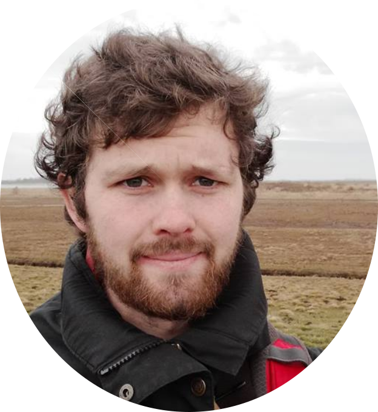
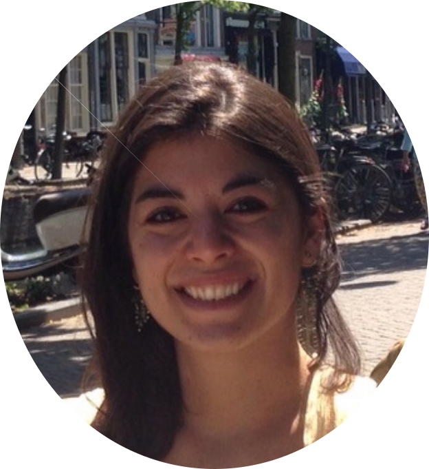

Nicolas Arning
Interdisciplinary Biosciences DTP
Biosciences related topics: Eukaryotic/viral/bacterial genomics, Statistical genetics, Sequencing
Computer science related topics: Python, Bash, HTML, Matlab, R, Machine learning, Applied statistics, Unix, Computer architecture, High performance computing, Data science
Knowledge of general tools: Inkscape, LaTeX, Sun Gridengine, git
Available Masterclasses: How to work on a computer/cluster remotely, Applied statistics using Python, How to write a report in LaTeX, How to do get from sequencing to genome and everything in between, Machine Learning in Python for absolute beginners

Ka Ho Tam
ONBI CDT
Biosciences related topics: Imaging, Automation, Ray tracing
Computer science related topics: Linux, Bash, Anaconda, Python; Matlab; C++
Knowledge of general tools: CAD/Blender, different IDEs for Debugging
Sara-Beth Amos
iCASE
Biosciences related topics: Computer simulation, markov state models, molecular dynamics simulations
Computer science related topics: Python, matlab, R, bash scripting, Anaconda, data analysis, statistics
Knowledge of general tools: jupyter/ipython notebooks and their use in the lab setting
Available Masterclasses: Markov state models for molecular dynamics simulation data (python), Data visualisation in Python
Laura Santana Gonzalez
Interdisciplinary Biosciences DTP
Biosciences related topics: Single-cell and bulk sequencing
Computer science related topics: R
Knowledge of general tools: STAR, EgdeR, R, featureCounts
Andreas Kjaer
Interdisciplinary Biosciences DTP
Biosciences related topics: Molecular Dynamics and Structural bioinformatics
Computer science related topics: Python, Bash, R
Knowledge of general tools: GROMACS and Biopythons various tools

Thomas Pak
Interdisciplinary Biosciences DTP
Biosciences related topics: Mathematical modelling
Computer science related topics: Object-oriented programming, systems programming, numerical analysis, scientific computing, parallel/high-performance/GPU computing, Linux, Bash, MATLAB, Python, C, C++, CUDA C/C++
Knowledge of general tools: Makefile, vim, MPI, OpenMP, SWIG, Chebfun, FEniCS, Lattice Microbes, Numpy/Scipy/Matplotlib, Inkscape, LaTeX/Markdown/pandoc, git/GitHub
Available Masterclasses: Solving partial differential equations in FEniCS (finite element solver implemented in C++ with Python interface), Introduction to GPU programming and CUDA C/C++, Chebfun tutorial (MATLAB package for computing with functions), MATLAB: vectorisation and best practices
Matishalin Patel
Interdisciplinary Biosciences DTP
Biosciences related topics: Dynamical modelling (stability analysis), Agent based simulation, genetic algorithms, NEAT
Computer science related topics: Machine learning, statistical modelling
Knowledge of general tools: Python, R, Julia, and Mathematica

Joe Wynn
Interdisciplinary Biosciences DTP
Biosciences related topics: Statistics (for biologists), specifically circular statistics
Computer science related topics: R, Windows and Mac machines
Available Masterclasses: data manipulation and statistics in R, Circular statistics course, How to analyze animal tracking data

Sofia Minano Gonzalez
Interdisciplinary Biosciences DTP
Biosciences related topics: Data analysis, data visualisation
Computer science related topics: CAD, optimisation, simulation, controllers design, animation, signal processing
Knowledge of general tools: CATIA, Matlab, Blender, Spyder (Anaconda), GitLab, MeshLab
Interested?
We can always use more experts! If you feel you have any computer related knowledge that people in the DTC can benfit from let us know. You can join us at any time just by filling out our expert form. Also if you are an expert on our team and want to add any knowledge you have gained to your profile here just fill out the form again.